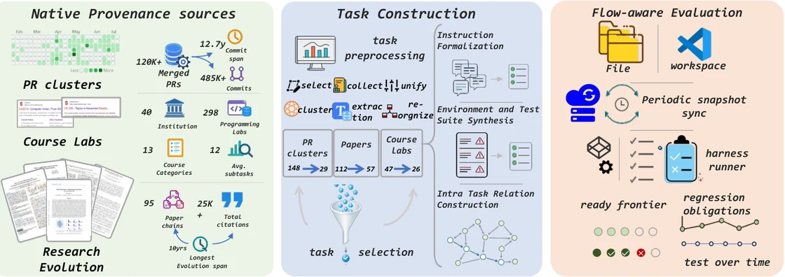

Coding agent evaluation
LoopsBench: From Harness Engineering to Loop Engineering in Coding Agent Evaluation
A long-horizon benchmark of 112 real-world tasks, using dependency graphs to measure sustained progress and regressions in coding-agent loops.